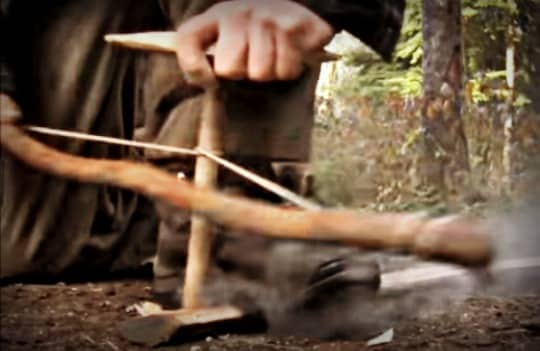

Another way on how to start a fire with sticks is with the use of a fire bow. You may recognize these from movies of a certain time period where the heroes fashion a bow-designed device from a branch and some twine.
They give the fire bow a few smooth pulls, and moments later fire jumps to life.
Again, it’s not as easy as it looks.

The directors of those sorts of movies edit out the hours of toil and sweat and instead hop right to the best part – when the fire starts.
A fire bow is composed of a sturdy branch but, in this case, you want it to have some moisture. This helps prevent it from snapping while you are drilling for friction.
The sort of branch you are looking for has a slight C shape to it, like a bow.
Yes, you can buy a fire bow and practice with it at home, but we are talking about ruggedly living off the land for a time.
Blue light specials won’t save you.
Try making a fire bow at home from natural material so you know what to do in the event of wilderness survival.
So once you have your bow-shaped stick there are a few more steps to create a fire bow.
Next, you need some string or paracord.
Most string materials can work, twine, shoestring, etc.
Worst case, if you don’t have shoe strings or paracord, you can tear a long strip of sturdy material from your clothing.
Not ideal but you can make it work.
Another wilderness option is to find some tough, flexible vines, like grapevines.
The length of cordage you need is roughly one and half times the length of your fire bow.
Now fasten the cordage to each end of the fire bow, at the tip ends.
Pro Tip: A fire bow fire drill works better if you select a stick that is larger in circumference than the one you’d twirl in your hands.
This helps give the bow cordage more area to grab which helps smooth the twirling process.
Now since you’re not twirling with both hands and are instead using only one hand on the fire drill, you can use the other hand to apply a stabilizing bearing block.
This is a piece of wood (or shell) held comfortably in your hand and placed on top of the fire drill to keep it steady as you twirl.
If using wood as the stabilizing bearing block you’ll want to add a natural lubricant to it.
A lubricant helps to prevent the bearing block from building friction and working against your twirling efforts.
Some fresh leaves work for this or a crushed worm or slug can work as well.
As before, make sure you have a tinder nest with easily ignitable materials on hand, ready to catch the coal you create.
Now you’re ready to drill for fire.
The fire drill cordage is looped once around the stick so you can twirl it by moving the bow in a back and forth motion like you are sawing.
The fire bow string twirls the fire drill, so its point rubs against the fireboard, creating fire-producing friction.
You hold the fire drill steady in place with your free hand placed on top of the hand-hold, keeping the fire drill from dancing all over the fireboard.
The fire bow has the following benefits of hand twirling alone:
Everything else remains the same.
Friction–>hot ember–>tinder bundle–>kindling–>small sticks–>logs–>FIRE.